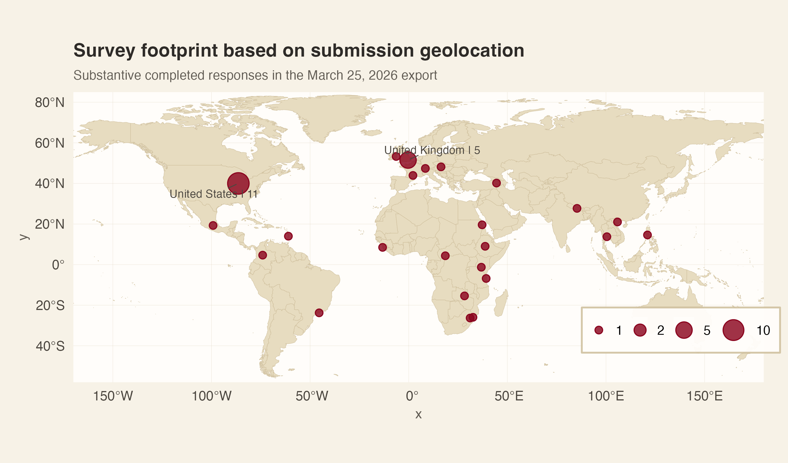

Why participate
By answering the survey, you help document how the current disruption in development financing is being experienced across organizations, sectors, and country settings.
As part of the Disrupted Development documentation process, we are collecting survey responses from individuals and organizations that may have been affected by recent policy changes related to global development financing and program implementation.
Join respondents from more than 20 countries who have already shared their perspective. Your response will help us better understand how these changes are being experienced in practice and strengthen the evidence base for this research effort.
The map below shows the current international reach of the survey and helps signal that this research is already receiving responses from a broad set of countries and contexts.

By answering the survey, you help document how the current disruption in development financing is being experienced across organizations, sectors, and country settings.
This map is included here as a simple invitation device: it shows that the survey is already active across more than 20 countries and encourages others to add their own perspective to the research.